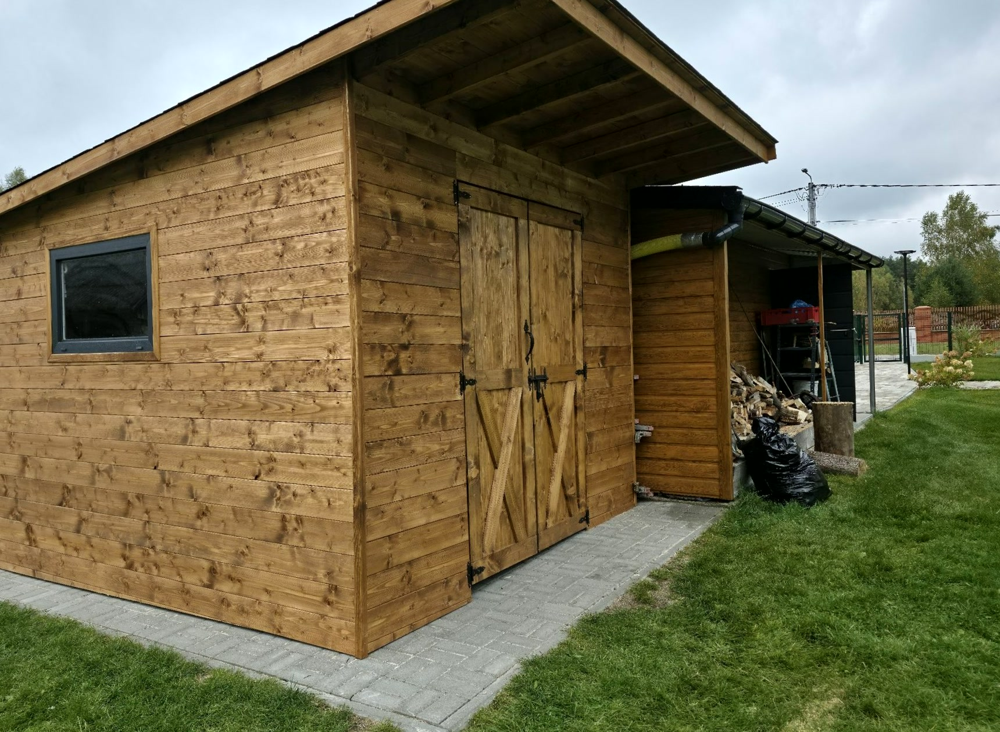
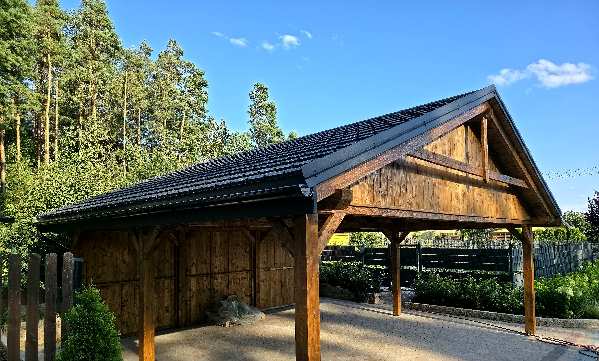
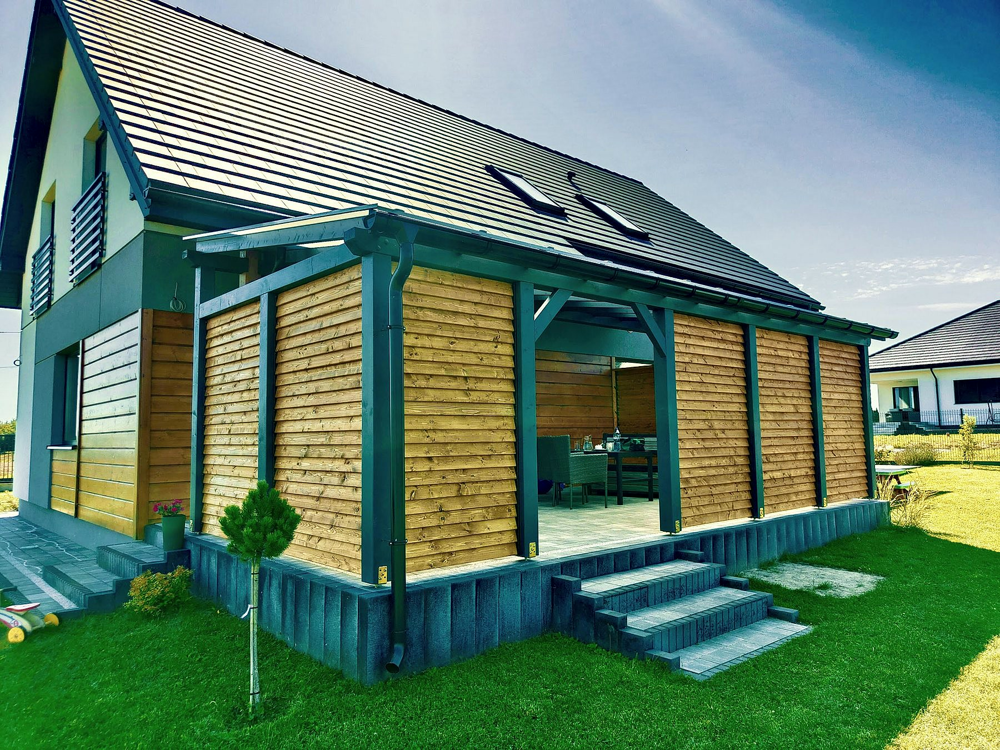
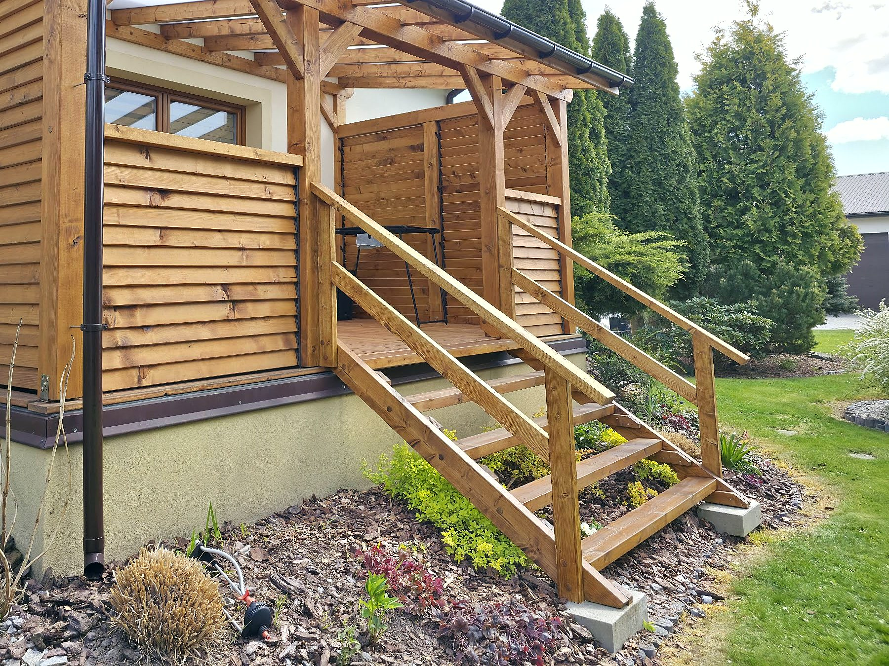
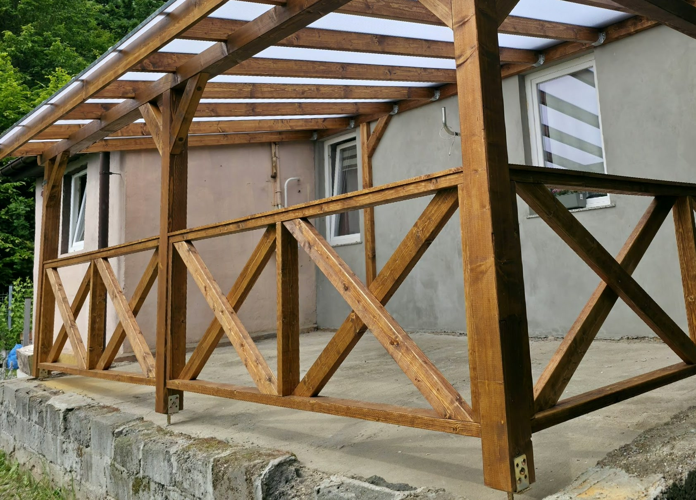
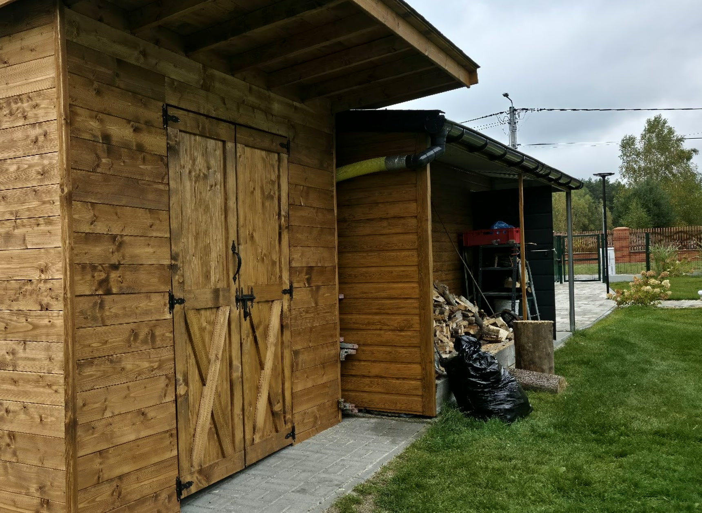

Domki narzędziowe i ogrodowe
Drewniane domki z oknem i dwuskrzydłowymi drzwiami, na kostce albo na fundamencie. Miejsce na kosiarkę, rowery i narzędzia.
Zapytaj o wycenę →
Każdą konstrukcję robimy na wymiar miejsca: inaczej stawia się zadaszenie przy nowym domu, inaczej przy starszej ścianie. Zadzwoń, opisz, co chcesz osłonić albo postawić, a podpowiemy rozwiązanie i przygotujemy wycenę.

Drewniane domki z oknem i dwuskrzydłowymi drzwiami, na kostce albo na fundamencie. Miejsce na kosiarkę, rowery i narzędzia.
Zapytaj o wycenę →
Drewniana konstrukcja z dachem krytym jak dom albo z pokryciem z poliwęglanu. Z bocznymi ściankami z desek, gdy taras ma być osłonięty od wiatru.
Zapytaj o wycenę →
Daszki nad drzwiami i schodami z drewna, z osłoną z desek po bokach.
Zapytaj o wycenę →
Lekkie drewniane zadaszenia z pokryciem z poliwęglanu, z balustradą z krzyżulców.
Zapytaj o wycenę →
Wiaty dwuspadowe z drewna z pokryciem dachowym dobranym do domu. Także wiaty na drewno przy domku.
Zapytaj o wycenę →
Tarasy z desek przy domu, ze schodami i balustradą, także razem z zadaszeniem.
Zapytaj o wycenę →Pięć kroków, od pierwszego telefonu do gotowej konstrukcji.
Opisujesz, co chcesz postawić. Przyjeżdżamy obejrzeć miejsce i zmierzyć.
Ustalamy wymiary, pokrycie dachu i kolor drewna. Podajemy cenę i termin.
Docinamy słupy, belki i deski pod wymiar konkretnego miejsca.
Stawiamy konstrukcję u Ciebie: słupy, belki, dach i osłony z desek.
Oglądamy razem gotową konstrukcję i poprawiamy to, co trzeba.
Wykonane zadaszenie prezentuje się bardzo estetycznie i w pełni spełnia nasze oczekiwania. Praca została wykonana starannie, schludnie i z dużą dbałością o każdy detal. Współpraca przebiegła sprawnie i profesjonalnie, a efekt końcowy jest naprawdę świetny.Michael
Napisz lub zadzwoń - doradzimy dobór, zmierzymy u Ciebie i podamy jasną cenę. Bez zobowiązań.